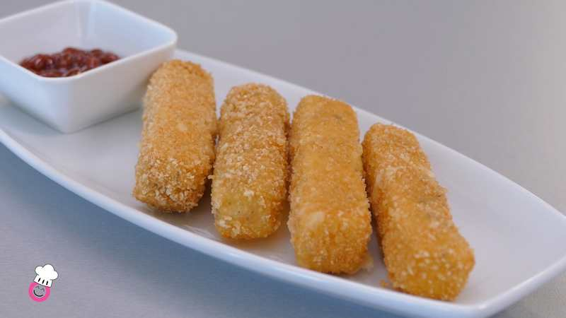
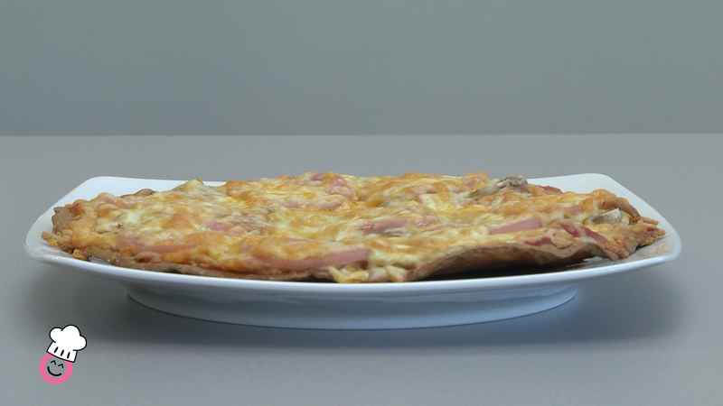

Para hacer nuestro sándwich de huevo sin gluten, colocamos un molde en una sartén para darle forma. Nosotros hemos optado por hacerlo redondeado, ¡aunque sería muy divertido con forma de nube o corazón! recordad echar aceite para que no se pegue.
Rompemos el huevo dentro del molde con ayuda de un tenedor. No lo muevas demasiado, ¡porque entonces se convertirá en una tortilla!
Echamos sal y pimienta negra sin gluten al gusto.
Echamos un poco de agua fuera del molde, hasta que cubra la base de la sartén, tapamos y esperamos 3 minutos. Es como un baño María, pero para hacer un sándwich de huevo sin gluten.
¡Tapa el huevo para que se haga bien! Por cierto, necesitamos una tapa para nuestro sándwich de huevo sin gluten, ¿no? ¡Pues con el otro huevo hacemos lo mismo!
Añadimos 60 g. de queso cheddar sin gluten y dejamos que se derrita un poco. Lo sacamos del molde.
Añadimos 2 tiras de bacon sin gluten en trozitos y tomate en dados y tapamos con el otro huevo.
Fingers de queso

300 gramos de queso cheddar
100 gramos de harina de arroz sin gluten
Una cucharadita de albahaca
Pimienta negra molida sin tacc
Una pizca de ajo en polvo
Sal
2 huevos
120 gramos de pan rallado sin gluten
Para hacer nuestros fingers de queso sin gluten partimos 300 gramos de queso cheddar en palitos de unos dos centímetros (aunque eso va al gusto)
Mezclamos 100 gramos de harina de arroz sin gluten junto con una cucharadita de albahaca, una pizca de pimienta negra, una pizca de sal de ajo (las 3 sin gluten, ¡recordad!) y un poco de sal.
Batimos dos huevos grandes. En otra fuente preparamos la mezcla de harina con las especias y en otra 120 gramos de pan rallado sin gluten.
Rebozamos bien los fingers de queso sin gluten de la siguiente forma: mezcla de harina, huevo, mezcla de harina, huevo y por último pan rallado sin gluten. Quitamos el excedente. Es muy importante seguir este proceso en este orden, ¡así nuestros fingers de queso sin gluten quedarán mucho más crujientes y sabrosos!
¡Freímos a fuego alto unos 3-4 minutos. Mira que los fingers de queso sin gluten estén dorados y ten cuidado al darles la vuelta para que no se abran.
¡Y listo! Podemos acompañarlos con alguna salsa como barbacoa sin gluten ¡o la que más nos apetezca!
Pizza de quinoa

100 gr. de quinoa
60 ml de agua
2 cucharadas de aceite
Media cucharadita de levadura sin gluten
Media cucharadita de sal
Champiñones
Tomate frito sin gluten
Orégano
Queso rallado sin gluten
Jamón cocido sin gluten
Lavamos los 100 gr. de quinoa porque en la cáscara del grano hay saponinas, causante del sabor amargo tan característico de esta semilla.
Dejamos reposar de 6 a 8 horas en agua.
Cuando haya pasado ese tiempo ha debido crecer.
Incorporamos en una jarra y añadimos media cucharadita de levadura sin gluten, media cucharadita de sal, 60 ml. de agua y dos cucharadas de aceite.
¡Batimos!
En un molde, ponemos papel de horno con aceite y añadimos la mezcla. Extendemos bien.
Lo metemos al horno precalentado 180 grados durante 15 minutos por un lado.
Pero ahora queda prepararla para comer. Ponemos tomate frito sin gluten (el nuestro es casero, que está mucho más rico) y orégano sin gluten.
Añadimos: queso rallado sin gluten, champiñones, jamón cocido sin gluten, y más queso rallado sin gluten.
Y ahora de nuevo al horno precalentado 180 grados durante 20 minutos.